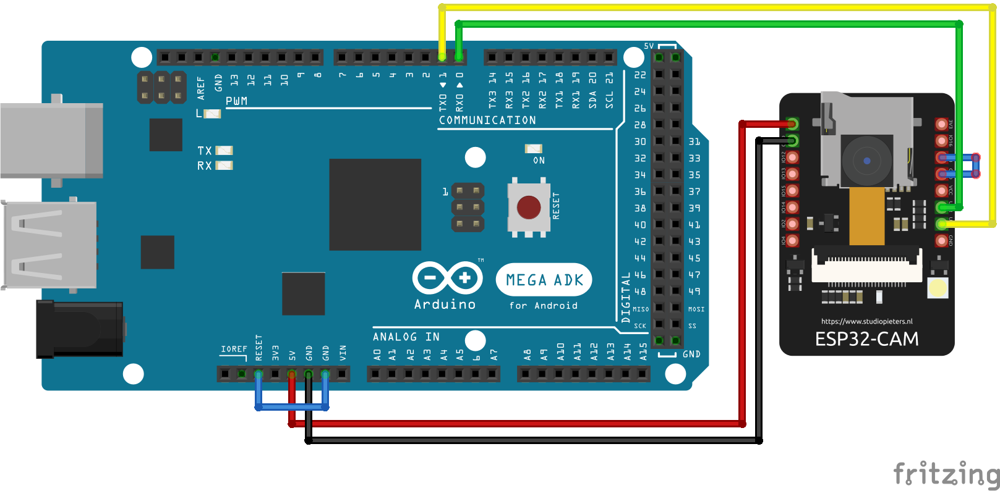

ESP32 Camera
Required for uploading:


Connections when uploading sketch

- Board: ESP32 Wrover Module
- Upload Speed: 115200
- Flash Frequency: 40Hz
- Flash Mode: QIO
- Partition Scheme: HUGE APP(3MB...)
- Programmer: AVR ISP
Connections after uploading sketch

Troubleshootings
- Make sure Tools Settings are correct
- `import serial` Not found.
- If you cannot upload, try to press reset button on the arduino mega and behind the esp32 and release them
- When the serial monitor is opened, you can only see the previous sketch printing instead of the currently uploaded one, try to press reset button on the arduino mega and behind the esp32 and release them. Don't forget to disconnect GND and GPIO0 pins of ESP32, and GND and RESET pins of mega before that.
- If you see Camera init failed, try not inserting the camera module into ESP32 deeply.
sudo apt install python-serial
pip install serial
pip install esptool